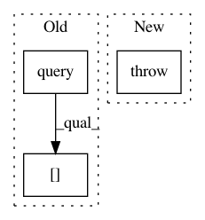

fbae2ef7254411252a9f177e5af82b211b4fc513,homeassistant/components/recorder.py,,limit_to_run,#Any#,80
Before Change
return "created >= {}".format(
_adapt_datetime(_INSTANCE.recording_start))
start_event = query(
("SELECT * FROM events WHERE event_type = ? AND created < ? "
"ORDER BY created DESC LIMIT 0, 1"),
(EVENT_HOMEASSISTANT_START, point_in_time))[0]
end_query = query(
("SELECT * FROM events WHERE event_type = ? AND created > ? "
"ORDER BY created ASC LIMIT 0, 1"),
After Change
return "created >= {} ".format(
_adapt_datetime(_INSTANCE.recording_start))
raise NotImplementedError()
def recording_start():
Return when the recorder started.
In pattern: SUPERPATTERN
Frequency: 3
Non-data size: 3
Instances
Project Name: home-assistant/home-assistant
Commit Name: fbae2ef7254411252a9f177e5af82b211b4fc513
Time: 2015-02-01
Author: paulus@paulusschoutsen.nl
File Name: homeassistant/components/recorder.py
Class Name:
Method Name: limit_to_run
Project Name: QUANTAXIS/QUANTAXIS
Commit Name: 7cbf66006434c859e4ba7f0d4de816fce1532d72
Time: 2018-06-01
Author: yutiansut@qq.com
File Name: QUANTAXIS/QAData/base_datastruct.py
Class Name: _quotation_base
Method Name: get_bar
Project Name: OpenMined/Grid
Commit Name: f40a6bbeb7c2616de351f2d0fcb927f606165017
Time: 2021-02-10
Author: ionesiojr@gmail.com
File Name: apps/domain/src/main/core/services/user_service.py
Class Name:
Method Name: get_user_msg